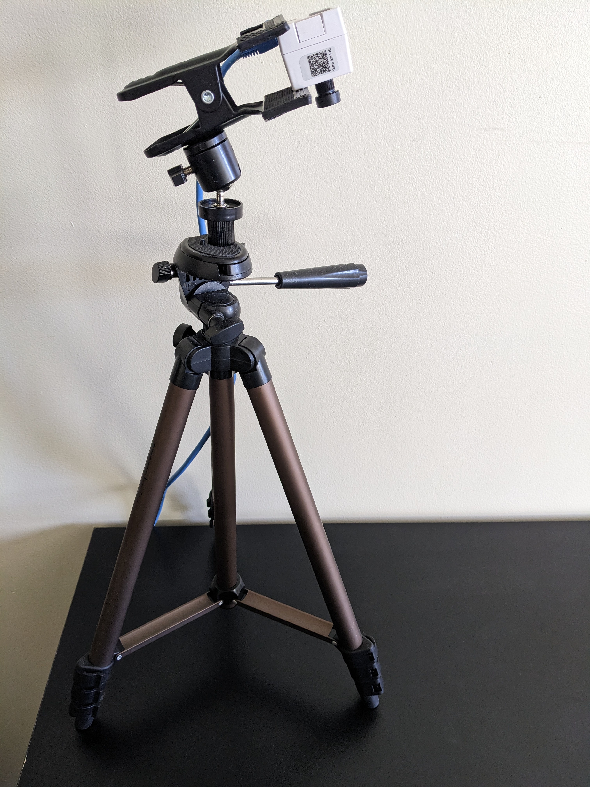

Installation and setup
Smart Parking runs on an Edge AI device and a PC running Windows 10 with Docker Desktop or GitHub Codespaces. Please see System requirements.
Note
An offline mode is provided to demonstrate the tool without an Internet connection or Edge AI device. Please see Using Offline Mode.
Edge AI device setup
The documentation provided with the Edge AI device provides the information you need for the initial sensor configuration.
Please refer to the Device Setup Guide for information about setting up the device and connecting to Console.
For more information about training the system, please see Please see Training Smart Parking.
Assembling the Edge AI device fixture
Attach the 1/4”-20 thread adapter (1) to the mounting screw on the tripod.
Screw the clamp (2) into the thread adapter.

Attach the Edge AI device (3) to the clamp as shown below.
Note the connection of the LAN port.
{kind=link}
Positioning the sensor
Start Smart Parking. For more information, see Starting Smart Parking.
Print a copy of the parking lot PDF and place near the base of the tripod.
Note
Two parking lot images are provided in the Smart Parking SDK repository from GitHub. You can print SmartParking-LotClean.pdf or SmartParking-LotRealistic.pdf.
Position the 1:64 scale toy cars on the printed parking lot.
Raise the tripod and adjust the angle of the clamp so the Edge AI device is aimed at the parking area as shown:

{kind=link}
{kind=link}
Installing the Smart Parking application
The Smart Parking application can be run from GitHub Codespaces, a Docker image, as local front and backend instances, or in a cloud deployment.
Using Codespaces
Go to the Smart Parking SDK repository in GitHub.
Start Codespaces and wait until
postCreateCommandfinishes.Type the following command to stop the node process:
kill $(lsof -t -sTCP:LISTEN -i:8080)
Edit
server/.env. For more information, see Editing environment settings.Navigate to
/server.Type the following command:
npm start
Open the forwarded port (default 8080).
Note
If you need to configure port forwarding, use the Ports section of the Command panel (next to Terminal). After configuring port forwarding, you should be able to click the displayed URL to start the application.
Creating and running a Docker image
Install Docker on the host machine.
Clone the Smart Parking SDK repository from GitHub.
Edit
server/.env. For more information, see Editing environment settings.Run the following command in the directory where the Dockerfile is stored to build the Docker image:
docker build -t <imagename>:<tag> .
Note
Please be sure to include the closing period in the preceding command.
Run the following command to start the Docker image:
docker run -p 5000:8080 <imagename>:<tag>
Running local front and backend instances
Install Node.js and npm prerequisites.
Note
Smart Parking was developed using Node v17.9.0.
Clone the Smart Parking SDK repository from GitHub.
Navigate to the root project folder and then type the following commands:
cd server git submodule update --init --recursive cd ..
Edit
server/.env. For more information, see Editing environment settings.Navigate to the root project folder and run the following command:
npm run install-dependencies
Run the following command:
npm run build-start
Hosting in a cloud service (optional)
You can optionally deploy Docker instances of the entire application (back- and frontend) via a service such as the Azure App Service.
Microsoft offers a deployment tutorial: https://docs.microsoft.com/en-us/azure/app-service/tutorial-custom-container?pivots=container-linux.
Please note the following issues regarding using the Docker service directly within the Azure Cloud Shell:
You will need some way of getting the source code for
Smart Parking Toolinto the Azure Cloud Shell environment.
git cloneshould work if you have access to its GitHub repository.Alternatively, you can transfer local files to the Cloud Shell via
Azure Files: https://docs.microsoft.com/en-us/azure/cloud-shell/persisting-shell-storage.Using the following Azure Cloud Shell command instead of directly using Docker (within the Cloud Shell, not locally) to both build and push the image seems to be more reliable:
az acr build --image <image-name:tag> --registry <your_container_registry_name> --file DockerfileThe rest of the commands involve configuring an
Azure AppServiceplan and webapp to deploy.
Editing environment settings
An environment file is provided in /server/.env:
Please coordinate with your IT adminitrator or AITRIOS representative for the appropriate values for your deployment.
CONSOLE_BASE_URLCONSOLE_TOKEN_URLCONSOLE_CLIENT_SECRETCONSOLE_CLIENT_IDSMART_PARKING_DETECTION_THRESHOLDSMART_PARKING_OVERLAP_THRESHOLDSMART_PARKING_DEFAULT_FEED_SIZESMART_PARKING_CAMERA_RESOLUTION
In /web/.env, the REACT_APP_API_HOST setting contains the server’s network address. If the value is empty, it assumes the API host runs locally to the UI.
Changes to the .env file will be reflected after you restart the application.
Examples
If you’re using your own training images and your own model, you’ll need to set the
ModelIdparameter of your Command Parameter File?. A sample of this file is available at<project_root>/SmartParking_StartUploadInferenceData.json.If you want to change the communications port, please set the
SMART_PARKING_INTERNAL_PORTparameter.
Console for AITRIOS
For information about configuring and using the Console for AITRIOS, please refer to the supplied documentation.
Console tasks
Create a Config in Deploy Device with the intended Model for Smart Parking and deploy it to the Edge AI device.
In the Application section of Deploy Device, deploy the
ppl_objectdetectionssdPPL application to the Edge AI device.Upload an appropriate Command Parameter File (Settings > Command Parameter > Import) and bind it to the Edge AI device in Manage Device. We provide a sample starting point for such a file in the root of the project repository:
SmartParking_StartUploadInferenceData.json.